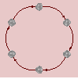
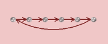
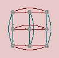
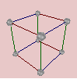
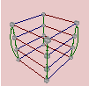
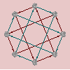
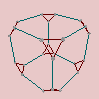

It is easy, the first time you see a group info window, to gloss over the mountain of information it presents. So allow me to wave a little flag next to an important section you want to take care not to miss.
Open any group info window now and follow along with me (pick your favorite group, or click here). Notice that at the top of the page are links to each section in the group information. Click on the "Computed properties" link to jump to that section.
This section is a goldmine of information, and you should spend some time investigating it. On the surface, it looks like a very small amount of information, but if you begin to follow the "tell me more" links, you will find that Group Explorer will often tell you much more.
For instance, click the "tell me more" link to the right of the class equation for the group you opened. You will find all of the following.
But far more deep information is available under the "tell me more" link next to the number of subgroups of the group you opened. Under that link you will find all of the following information (!).
The point being: Do not ignore the computed properties of a group in its info window! It is an excellent place to start learning about your group, and to start learning some group theory terminology in a fairly concrete context, with definitions readily available.
Now let's get a taste of some of the power group theory visualization has for building intuition.
The Fundamental Theorem of Abelian groups states that every abelian group is simply a product of cyclic groups. From this group theorists conclude that abelian groups are less interesting to study than nonabelian groups, because this theorem effectively completely classifies them. We understand them thoroughly, through this theorem.
However, if you are a first-time abstract algebra student, this theorem usually does anything but give you complete understanding of abelian groups. It seems fairly opaque, as a matter of fact. Let's see how Group Explorer can show us what this theorem means.
The theorem says that abelian groups are products of cyclic groups. What are cyclic groups? They are groups that are generated by one element running in a cycle; hence, the name. Their Cayley diagrams and cycle graphs look like circles, as shown here.
 |
 |
 |
 |
Cayley diagram of the cyclic group ℤ3 |
Cayley diagram of the cyclic group ℤ6 |
Cycle graph of the cyclic group ℤ8 |
Cycle graph of the cyclic group ℤ15 |
If we ask Group Explorer to use a linear axis for displaying a cyclic group, it stretches it out into a line, with one loop connecting the end of the line to the beginning, like this.

Remember this image, because it is important below.
Let's take a look at the Cayley diagrams of some abelian groups. You can tell which ones are abelian by looking at the "Abelian" computed property in their group info window. Better still, in the main window you can show the "Abelian" column and see yes/no for each group.
 |
 |
 |
 |
Cayley diagram of the group V4 |
Cayley diagram of the group |
Cayley diagram of the group |
What do you see when you look at these diagrams?
Notice that all of these diagrams are assembled from pieces which are like the image of a linear cyclic group, centered above. That is, many little linear cyclic groups, at right angles to one another, combine to form each of these diagrams.
From this we can conclude two useful things.
If abelian groups are just products of cyclic groups, then this product operation must mean simply something like "attatching a bunch of copies at right angles." This is essentially true, and has an important contrast to semidirect products, for instance. (There are a few semidirect products in Group Explorer's library. If you view them, you will notice their Cayley diagrams are quite tangled--not plain and simple right angles at all!)
Now when a group theorist tells you that the Fundamental Theorem of Abelian groups completely explains abelian groups, you can have a better understanding of what he's saying. The theorem stated
Every abelian group is a product of cyclic groups.
Now that we've looked at a few diagrams of abelian groups, we can perhaps rephrase the theorem to describe what we've seen.
Every abelian group is just a lot of short lines, glued together at right angles.
In our rephrasing the "short lines" are linear representations of cyclic groups, and the "glued together at right angles" corresponds to the notion of a product.
This does make abelian groups sound both straightforward and readily understandable, especially when we contrast them with nonabelian groups. Let's take a look at a few Cayley diagrams for nonabelian groups.
 |
 |
 |
 |
Cayley diagram of the group Q4 |
Cayley diagram of the group ℤ3 ⋊ ℤ4 |
Cayley diagram of the nonabelian group of order 21 |
Cayley diagram of the group S4 |
See how much more tangled (and therefore complex) they are! By contrast, surely the nonabelian groups are the ones that require more study.
Quick help links:
Contents | Getting Started | Tutorials | User Manual | Miscellaneous Reference
GE terminology | Help on help